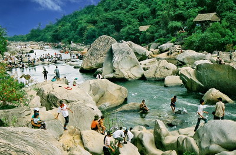

Ham Ho tourist wild

Ham Ho is the famous ruins of the village of Phu My, Tay Tay Son Phu District, Binh Dinh Province, Ham Ho is also have terrain weak, base of the insurrection movement Vuong Nghia Binh Tay Son against France's Mai Xuan Thuong. This is also the area of anti-American.
Binh Dinh People's Committee dated 17-2-1995 issue Decision 287/QD-UB recognize the scenic Ham Ho and for protection zoning registration with an area of 150,000 km2. As a famous landscape in Xishan District, Binh Dinh Province, but Ham Ho is not attractive by building magnificent by human hand embellished.
The story goes that, Ham Ho is known as a humble long life derived from a real phenomenon usually occurs on the river Kut. Every year, at the peak of the dry season, especially in drought years, when people expect to rain down, right on the river at night often have strange sound emerged very clearly like Together they complete. After a very short time, it can rain storm. From the shouts permutations of this, this section of the river known as the Ham Ho, comes from the terms "respiratory Universe" that the rain is a very sacred ancient age. However, as explained by the scientists, this is a natural phenomenon. Ham Ho is downstream of Kut river meandering around two dense cliff of rocks and trees and the temperature is always lower than the basin plain. When the drought reached its peak certainly land will turn to rain. During the conversion of rain made the air colder, stronger downstream overflow. So eager to encounter a special terrain: dense forest with deep cavities of the rocks creates resonant sound.
According to local people, spring is the best time of year if you want to sightseeing Ham Ho. On the last day of winter, sun Tet still cold, then there will be tens of thousands of visitors to Ham Ho transparent zigzag path along the river. Visitors buy tickets boat 5.000d/nguoi/1uot to go to me to respond. Then, up the river, through the stunning landscape as Regional Excellence, Ba, Trunks, Da Chay Waterfall Two, Three Falls, Mist, Sand Village, where the ends of the Kut River adjacent to Phu Yen and Gia Lai, visitors have a sense of fun and curiosity of an endless string of spectacular unspoiled nature.
Kut river winding stretches the green non same message with the epic poetic landscape is nestled behind the gateway Ham Ho. From early spring to late summer, visitors can get to Ham Ho enjoy. To take the tour yourself to explore, to have at least two villagers father led the way with a date for a price of 50,000 VND how eating or contact the travel management Ham Ho. In the return journey the river Kut, it is easy to see that potential available on the river a lot but do not have the conditions to develop. Ham Ho existing resort is quite famous for its primitive, but for further development, can not be done immediately. Ham Ho attractive but arduous and becoming.
It was the dream of a cable car line was built along the river Kut so that visitors admire the unspoiled grandeur of the mountains, the winding bend of the river, a refreshing cool space with light forest moon shimmering on the silver waves. At that Tay Son Binh Dinh will be "Wild Forest tour" the country's second most prominent. Hope it has a cable car, Ham Ho will be the reunion of visitors from all four directions.